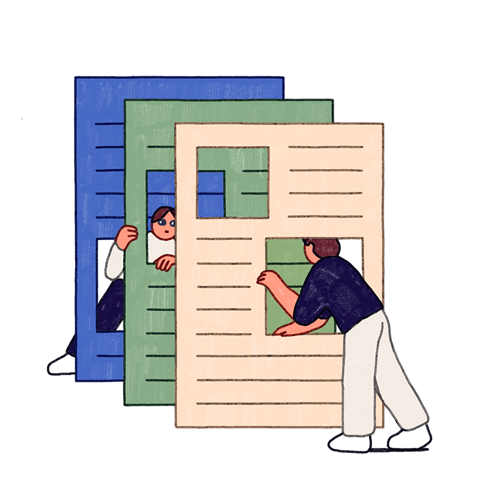

Vi er et team av fem erfarne journalister med bakgrunn innen IT og kunstig intelligens, drevet av en lidenskap for teknologi og kunnskapsformidling. Vårt mål er å gi befolkningen innsikt i teknologiske framskritt, hvordan data fungerer, og hvordan IT påvirker samfunnet vårt på både godt og vondt. Vi bryter ned komplekse temaer og gjør dem tilgjengelige for alle, enten du er teknologiekspert eller bare nysgjerrig på den digitale utviklingen. Vi tror at kunnskap er nøkkelen til å forstå og utnytte teknologiens muligheter på en smart og ansvarlig måte. Derfor dekker vi alt fra kunstig intelligens og cybersikkerhet til de nyeste innovasjonene som former fremtiden. Med grundig research og et kritisk blikk jobber vi for å gi deg oppdatert, pålitelig og engasjerende innhold – slik at du kan ta informerte valg i en verden som stadig blir mer digital.
I en digital verden der informasjon spres raskere enn noensinne, er kildekritikk viktigere enn noen gang. Med et hav av nyheter, sosiale medier og AI-generert innhold kan det være vanskelig å skille mellom fakta, feilinformasjon og propaganda. Uten en kritisk tilnærming risikerer vi å bli manipulert, spre usannheter eller ta beslutninger basert på feilaktige premisser. Derfor er det avgjørende å vurdere kildenes troverdighet, sjekke flere uavhengige kilder og være bevisst på hvordan algoritmer og kommersielle interesser påvirker informasjonen vi ser. Kritisk tenkning gir oss ikke bare bedre forståelse av verden, men også verktøyene vi trenger for å navigere trygt i en digital hverdag.
